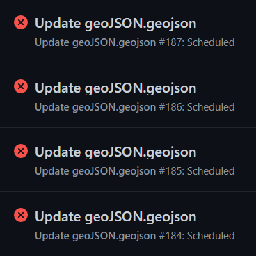
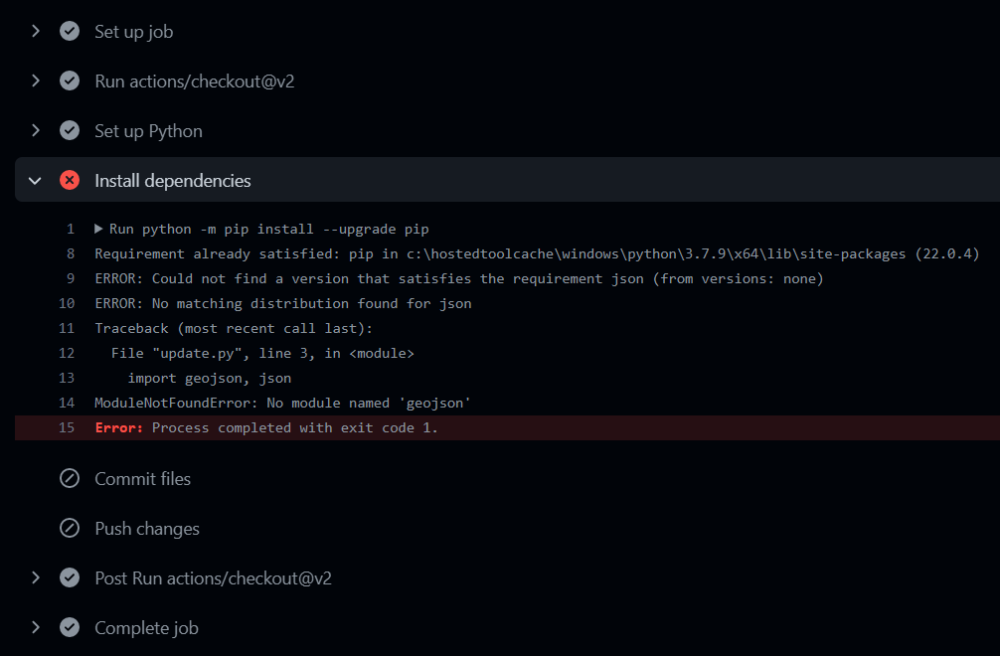
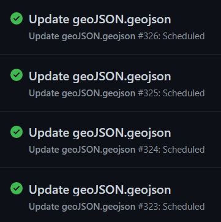

Process Steps
How we created the solution for this project
How we created the solution for this project
A simple, lightweight, interactive open-source base map
As building the project based on free, open-source technology is one of the major requirements, leaflet map – a leading open-source JavaScript library for mobile-friendly interactive maps – was chosen. Leaflet utilizes map data from OpenStreetMap as well as map tiles from Mapbox and has very simple, easy-to-use API.
Many factors were taken into consideration for the design of the map. Most web maps tend to have a set zoom and starting location. However, as this project aims to have users across Ontario input significant native tree data on-the-go, the map was set to automatically centered to the user’s current location – if they allow permission to access their location. Furthermore, dark theme was applied to help save energy when travelling and help the tree markers stand out more. A textbox containing the link to the submission form was also added to map.
A simple survey form to collect significant tree data
Now that the base map has been set up, it is time to start collecting significant native tree data. Because this project relies on public input, having a free, simple submission process is uttermost important. We decided to use KoBo Toolbox, which is a free open-source tool for mobile data collection used to collect data in the field using mobile devices such as mobile phones or tablets. Particularly, we used a product called Humanitarian Response – which can be used offline and very easy to use, suitable for people who want to submit tree data in the field where cell phone signals may not present, and provides unlimited submissions and data storage.
The submission form collects the location of the user/tree automatically. Users can also change the location; however, it is advised that they should submit data right in the field. A list of most common native tree species in Ontario is provided for users to choose quickly, including the options for trees that are not on the list. Users will have to submit a photo of the significant tree for identification – that way other users can also visit the tree and recognize it. They are also encouraged to leave a comment explaining why the tree they submitted is significant.
JSON
In order for the tree data from the survey to be added to the map, it has to be exported in geoJSON format and added to the map. Data from the survey is stored in the Humanitarian Server hosted by UN Office for the Coordination of Humanitarian Affairs (OCHA) and can be accessed through a GET request via KoBo Toolbox API.
The geoJSON was then downloaded and added to the map via JavaScript. We also set a pop-up for each marker, showing the species name, photo and any comment if available – all pulled directly from the geoJSON file. In addition to the data collected from the survey, data collected by students of GEOM65, Fleming College in the fall semester of 2021 was also added to the map using a separate geoJSON file. All the tree markers were put into either a deciduous or coniferous layer to enable users to filter the results. Each layer is distinguished by a different marker colour, and the data points collected by Fleming College students also have different colours comparing to the markers from the survey.
Finishing touches to keep the map running properly
So far, the process of adding the geoJSON file from KoBo Toolbox to the map had been done manually. In order to automate the project, we had to set up a way for the geoJSON to be updated automatically by github. Using the API token from the Humanitarian Response account used to create the survey, as well as the python codes for a GET command to pull the geoJSON file from KoBo Toolbox generated by postman.com, we started setting up the python file that would be run by github to update the local geoJSON file.
The GET command in the python file pulls all the data from KoBo Toolbox down into a local geoJSON file. However, as the project focuses on significant Ontario native trees, we added a geoJSON file of the boundaries of Ontario and coded a filter to eliminate any input from the submission form that is outside of the province. The output is then be put into a new geoJSON file, and this is the file that is coded into the web map.
After verifying that the python codes run properly on Visual Studio Code, we set a github workflow that would automatically run the python file in the repository. A yml file was created, setting up the process to be run every 5 minutes. Now that everything has been automated, the project is finished and ready for a large audience to experience.
The struggle is real
One of the first problems we encountered was the images pulled from KoBo Toolbox were broken in the pop-ups. After many trials of adding data, deleting data, making different surveys, we found that only the photos from the first survey that we created during our test run could be displayed. This is most likely a glitch from the server side of KoBo Toolbox, and to solve this problem, we had to update what originally was a test survey into our official survey.
Another problem relating to the images was also discovered. Due to the massive amount of repetitive JavaScript, our original plan was to put all the JS codes into a separate JS file and reference the script in the html file. However, when the JS was in an external file, the images became broken again. Therefore, we had to put all the JS codes back into the html file. Luckily, the JS script to add the data from Fleming College students ran perfectly fine in the external file – probably because there was no image to pull from an online database server.
The biggest problem that plagued our project was trying to have the yml run properly. Initially, the file kept failing to run properly. We could not find any thing wrong with our syntax for the longest time. After finding out that we could see what the error was if we clicked into the notification (pictured), we discovered that the problem lied in the requirements.txt file that was used to list all the package. It took many trials – which actually took a very long time due to github server being very slow during the day, by the elimination process, we found out that the json module needs to put input as jsonschema in the txt file in order for it to run.
  